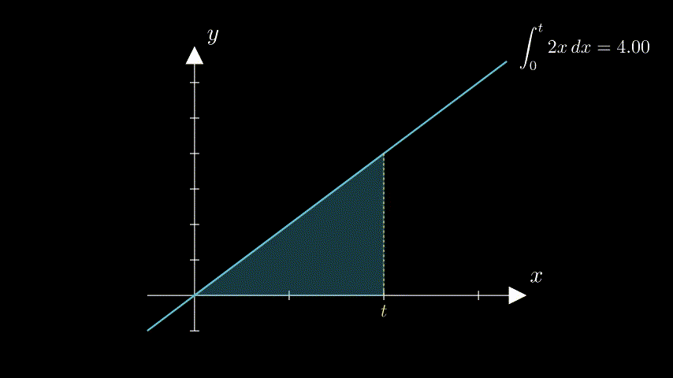
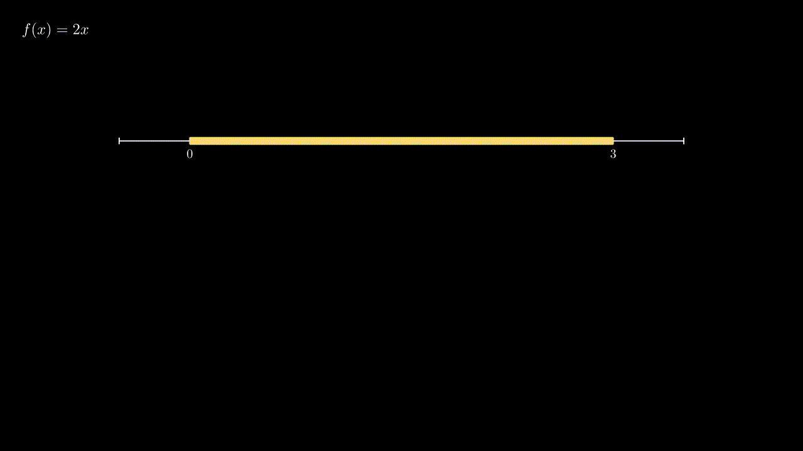

Integrals in introductory calculus classes are often introduced as representing the area under a curve. When the curve happens to be a rate of change for some quantity, this area in turn represents the change in that quantity over some interval of time.

As was the case with complex differentiation, we should take a broader and more abstract perspective before generalizing to complex numbers. An integral $$\int_{x_1}^{x_2}f(x)\,dx$$ is an infinite sum, whose terms are the values $f(x_1)$, $f(x_2)$ and everything in between, and are weighted by infinitesmal weights $dx$ that sum to $x_2 - x_1$. (This notion is made formal through Riemann sums).
